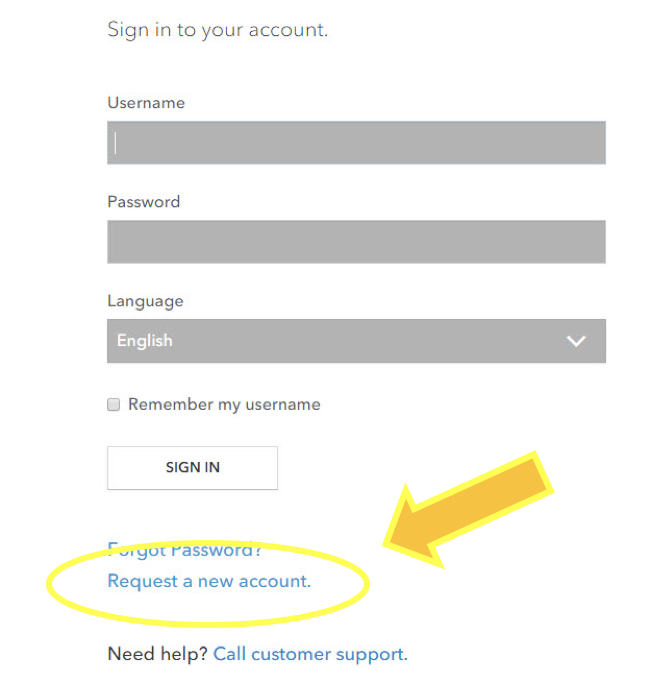
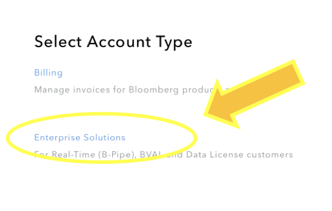
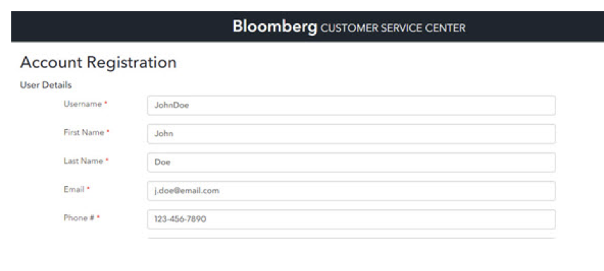
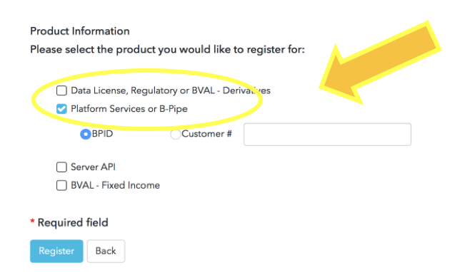

Introduction¶
The IOI API is available as programmable and with Excel using MS COM Object. The EMSX API provides Bloomberg users with the ability to publish IOIs into Bloomberg and subscribe IOIs in Equities and Derivatives using Bloomberg API
The IOI API for pulishing IOIs into Bloomberg and subscribing requires separate authorization by the publishing broker on top of the Bloomberg authorization.
Note
IOI API users will need the following steps completed before using the IOI API service.
- Signed EMSxNET Order Originator Agreement.
- Install serverapi.exe and register with Bloomberg.
- Enable IOI API per UUID by the Global EMSX Trade Desk for Test (Beta) and Production.
- To get access to IOI API in UAT and production, please click <Help><Help> on EMSX<GO>.
- Download Bloomberg Desktop API v3 SDK from WAPI<GO> in Bloomberg terminal.
To get access to IOI API in UAT and production, please click <Help><Help> on EMSX<GO>.
Sign Up - Programming Support¶
For general programming support, please open an account through the following URL:-
For a new user, you will need to first start by creating the account in https://service.bloomberg.com and select “Request a new account”.
{kind=link}
Select Enterprise Solutions:-
{kind=link}
Fill out the details on Account Registration:-
{kind=link}
Select B-Pipe, select the role as Technical Contact, and insert Customer #. The Customer # can be found in the terminal by typing IAM<GO>. Select production information as B-Pipe and click register to finish:-
{kind=link}